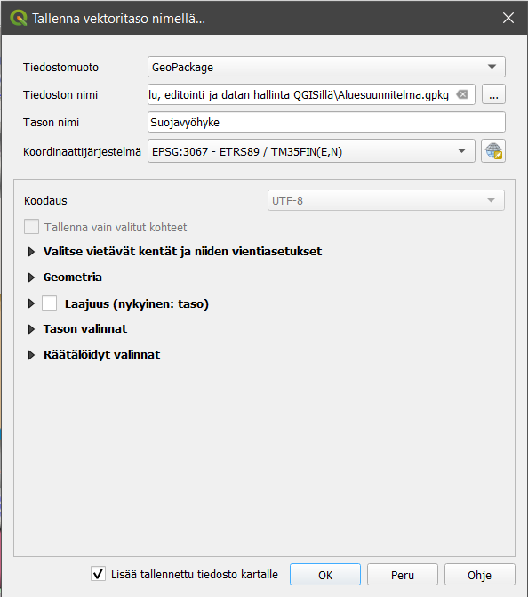
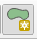
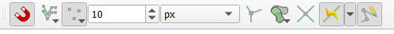
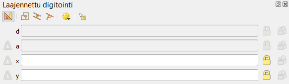
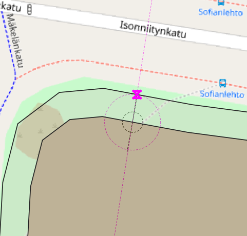
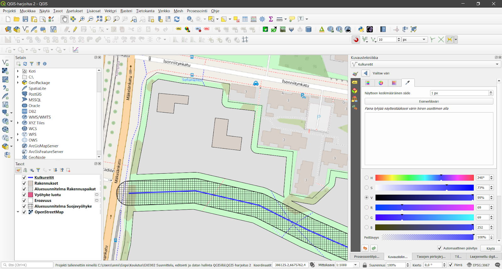

Harjoitus 3: Edistyneet digitointiominaisuudet
Harjoituksen sisältö
Harjoituksessa tehdään edistyneitä digitoinnin operaatioita QGISillä.
Harjoituksen tavoite
Harjoituksen jälkeen opiskelija osaa hyödyntää monipuolisemmin editoinnin ominaisuuksia.
Arvioitu kesto
45 minuuttia.
Valmistautuminen
Avaa uusi QGIS-projekti (Projekti > Uusi) ja tallenna se nimellä “QGIS-harjoitus 2”. Lisää projektiin seuraavat aineistot:
Aluesuunnitelma.gpkg (Alueet- ja Kulkureitit-tasot)
OpenStreetMap
Edistyneen digitoinnin ominaisuudet
Luodaan ensimmäisenä Kulkureitit-tason raitiotielle puskurivyöhyke, jonka sisälle ei sallita rakentamista. Valitse Prosessointityökalut-paneelista Vektorigeometria > Vyöhyke, eli vyöhykeanalyysi. Jos tiedät mitä työkalua haet, voit kirjoittaa sen nimen Prosessointityökalut-paneelin Etsi-kenttään. Muodosta Vyöhyke-työkalulla haluamasi levyinen vyöhyke, mutta voit tehdä vyöhykkeen esimerkiksi seuraavan kuvan mukaisesti:

Paina lopuksi Suorita, jolloin QGIS luo projektiisi uuden väliaikaisen geometriatason vyöhykkeelle. Väliaikaisen tason tunnistaa mikropiiri-kuvakkeesta . Uusi vyöhyketaso halutaan kuitenkin pysyväksi osaksi aineistoa, joten tallenna vyöhyke osaksi aikaisemmin luotua Aluesuunnitelma-GeoPackagea klikkaamalla hiiren oikealla väliaikaista Vyöhyke luotu -tasoa ja valitsemalla Vie > Tallenna kohteet nimellä… Valitse tiedostomuodoksi GeoPackage, valitse tiedostoksi Aluesuunnitelma.gpkg ja anna tasolle nimeksi “Suojavyöhyke”. Paina sitten OK, niin QGIS tallentaa tason osaksi aikaisemmin luotua GeoPackagea.

Kun tiedosto on tallennettu, visualisoidaan vyöhyketasoa hieman, jotta analysointi olisi helpompaa. Valitse Näytä > Paneelit > Kuvaustekniikka, niin saat Kuvaustekniikka-paneelin näkyviin QGISiin. Tasoa voi visualisoida myös klikkaamalla tason kohdalla hiiren oikeaa nappia ja valitsemalla Ominaisuudet… > Kuvaustekniikka.

Muuta vyöhyke osittain läpinäkyväksi ja tee sille muita haluamiasi muutoksia, jotka helpottavat vaikutusalueen tulkintaa.

Seuraavaksi luomme Alueet-tason sisälle rakennuspaikkoja, jotka tulevat olemaan suojavyöhykkeen ulkopuolella ja korkeintaan viiden metrin etäisyydellä alueen reunasta. Leikataan Alueet-taso Suojavyöhyke-tasolla, koska suojavyöhykkeelle ei kuitenkaan saa rakentaa. Valitse Prosessointityökalut-paneelista Vektoritiedon päällekkäisanalyysit > Eroavuus. Aseta syötetasoksi Alueet-taso ja peitetasoksi Suojavyöhyke-taso. Paina sitten Suorita.

Saat tämän jälkeen uuden väliaikaisen tason, joka toimii pohjana seuraavaan vaiheeseen.
Negatiivinen vyöhyke
Valitse Prosessointityökalut-paneelista jälleen Vektorigeometria > Vyöhyke. Teemme edellisessä vaiheessa luodulle tasolle negatiivisen vyöhykeanalyysin, jotta saamme määritettyä rakennuspaikat viisi metriä sisäänpäin Alueet-tason reunasta.

Tallenna tästä syntyvä taso Aluesuunnitelma-GeoPackageen nimellä “Rakennuspaikat”.
Kohteiden editoiminen alkuperäisessä tiedostossa
Aiemmin QGIS loi usein uuden tason, kun sille tehtiin jokin geoprosessoinnin operaatio. Lopputuloksena saattoi olla projekti, joka oli täynnä väliaikaisia tasoja. Uutena ominaisuutena QGIS mahdollistaa nykyään Muokkaa ominaisuuksia suoraan -toiminnon (engl. In-Place Editing), jonka avulla voidaan esimerkiksi pehmentää tason geometriaa tekemättä siitä uutta tasoa. Muutokset siis tehdään suoraan lähtötasoon.

Toiminto löytyy Prosessointityökalut-paneelin ylävalikosta.
Toiminto on käytössä vain sellaisille prosessointityökaluille, joissa kohteen geometriatyyppi ei muutu.
Kohteisiin tarttuminen (snapping) ja rakennustila (construction mode)
Seuraavaksi teemme rakennuksia rakennuspaikoille. Luo Aluesuunnitelma-GeoPackageen uusi taso rakennuksia varten seuraavasti:
Aloita valitsemalla työkalupalkista jälleen Uusi GeoPackage-taso. Tällä kertaa kuitenkin valitsemme Tietokanta-kenttään kohteeksi aiemmin luodun Aluevaraus-Geopackagen, jolloin uusi taso tuleelisätyiksi siihen. Kun olet valinnut Aluevaraus.gpkg:n tietokannaksi, anna tason nimeksi “Rakennukset” ja täytä tason tiedot kuten alla olevassa kuvassa:

Tallennettaessa QGIS kysyy, korvataanko aiemmin luotu GeoPackage vai lisätäänkö uusi taso siihen. Valitse Lisää uusi taso.

Seuraavaksi laita Tarttuminen , Seuraaminen  ja Self-snapping
ja Self-snapping  päälle Tarttumisen työkalut -paneelista. Aseta muut tarttumisasetukset seuraavan kuvan mukaisiksi:
päälle Tarttumisen työkalut -paneelista. Aseta muut tarttumisasetukset seuraavan kuvan mukaisiksi:

Valinnat järjestyksessä vasemmalta oikealle:
Tarttuminen
Kaikki tasot (klikkaa kuvaketta ja voit valita asetuksen pudotusvalikosta)
Taitepiste (klikkaa kuvaketta ja voit valita asetuksen pudotusvalikosta)
10
px (pikseliä)
Ei käytössä
Ei käytössä
Ei käytössä
Ota seuraaminen käyttöön
Self snapping (tarttuminen työn alla olevaan digitoitavaan kohteeseen)
Rakennusten luonnissa on kolme sääntöä:
Rakennusten tulee olla 45 tai 90 asteen kulmassa suhteessa rakennuspaikan reunaan
Rakennuksen tulee sijaita vähintään 5 metriä rakennuspaikan reunasta
Rakennuksen tulee sijaita vähintään 5 metriä toisesta rakennuksesta
Rakentamistila tarkoittaa tilaa, jossa voit valita kohteita kartalla, määrittää liikkumisen kulmia ja napata kiinni kohteisiin, mutta tilassa ei varsinaisesti luoda uusia geometrioita tai kulmapisteitä. Voit siis vaihdella rakentamis- ja editointitilan välillä yhden kohteen digitoinnin aikana.
Aseta Rakennukset-tason editointi päälle kynäkuvakkeesta. Kun valitset Lisää polygonikohde -työkalun, Laajennettu digitointi -kuvake aktivoituu  . Klikkaa kuvaketta niin saat Laajennettu digitointi -hallintapaneeliin QGISiin.
. Klikkaa kuvaketta niin saat Laajennettu digitointi -hallintapaneeliin QGISiin.

Aloita nyt Rakennukset-tason editointi. Tarkoituksena on luoda rakennuksia rakennuspaikkojen sisään aikaisemmin mainittujen sääntöjen mukaan. Toimi seuraavasti:
Klikkaa Rakentamistila päälle
 -painikkeesta tai näppäimistöltä pikakomennolla c
-painikkeesta tai näppäimistöltä pikakomennolla cValitse rakennusalueen reunasta kohta, johon rakennus tulee
Laita d-kentän arvoksi 5
Klikkaa Kohtisuora-kuvaketta
 ja valitse ulkoreunalta viiva, jonka suhteessa rakennuksen tulisi olla 90 asteen kulmassa
ja valitse ulkoreunalta viiva, jonka suhteessa rakennuksen tulisi olla 90 asteen kulmassaNyt QGIS lukitsee aloituspisteen ja voit siirtyä pois rakentamistilasta klikkaamalla uudestaan
 (tai pikanäppäimellä c) ja ryhtyä digitoimaan rakennusta.
(tai pikanäppäimellä c) ja ryhtyä digitoimaan rakennusta.

Tämän jälkeen editoi aineistoon rakennuksia vähintään kolme kappaletta edellä mainittujen sääntöjen mukaisesti hyödyntäen laajennetun digitoinnin ominaisuuksia. Koita myös kääntää rakennuksia 45 astetta hyödyntäen Kierrä kohteita -työkalua  . Ota lopuksi tason editointi pois päältä ja tallenna tasoon tehdyt muutokset. Avaa Kuvaustekniikka-paneeli tai mene tason ominaisuuksien kautta Kuvaustekniikka-välilehdelle ja muokkaa editoitujen kohteiden värit vastaamaan taustakartan värejä Värin valitsin -työkalua hyödyntäen.
. Ota lopuksi tason editointi pois päältä ja tallenna tasoon tehdyt muutokset. Avaa Kuvaustekniikka-paneeli tai mene tason ominaisuuksien kautta Kuvaustekniikka-välilehdelle ja muokkaa editoitujen kohteiden värit vastaamaan taustakartan värejä Värin valitsin -työkalua hyödyntäen.

Voit vielä hyödyntää alueen reunaa käyttäen Seuraaminen-ominaisuutta:
Kun olet valmis, tallenna projektitiedosto kurssihakemistoon pikanäppäimellä CTRL + T (englanninkielisessä QGISissä CTRL + S) tai päävalikosta Projekti > Tallenna.
Psst! Muista tukipalvelu! Koulutuksen jälkeen saat henkilökohtaista tukea Gispon tukipalvelun kautta lähettämällä yksinkertaisesti tuki@gispo.fi -sähköpostiosoitteeseen kysymyksen tai kommentin jostakin sinua mietityttävästä asiasta. Gispon tiimi auttaa sinua toimiesi äärellä. Kysymykset käsitellään henkilökohtaisesti.